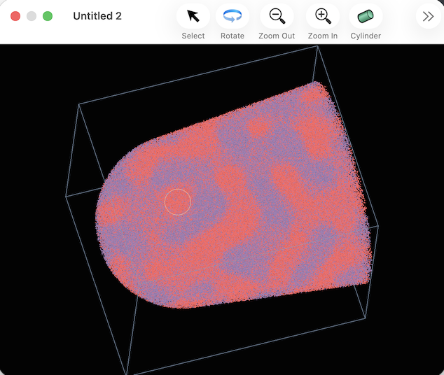
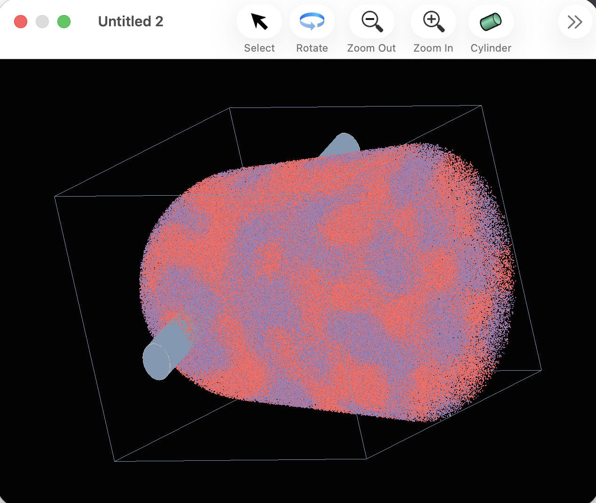
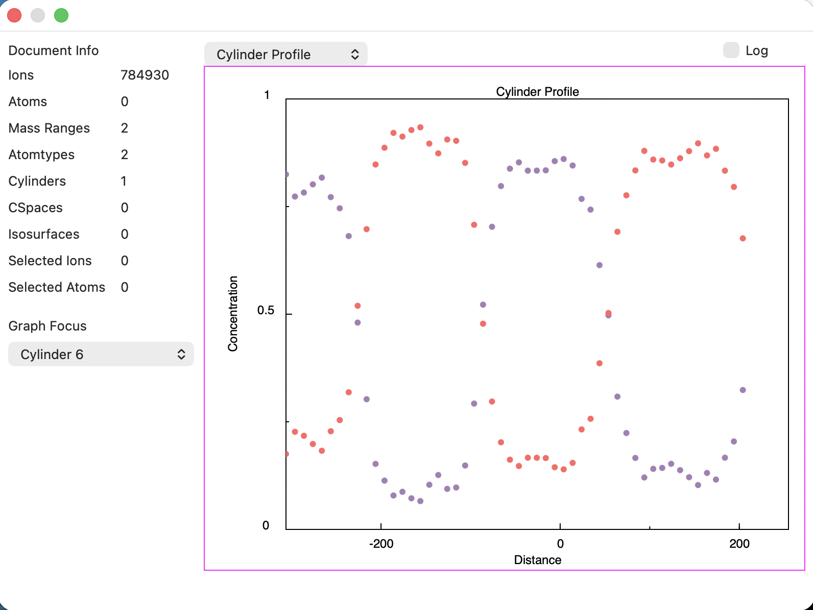
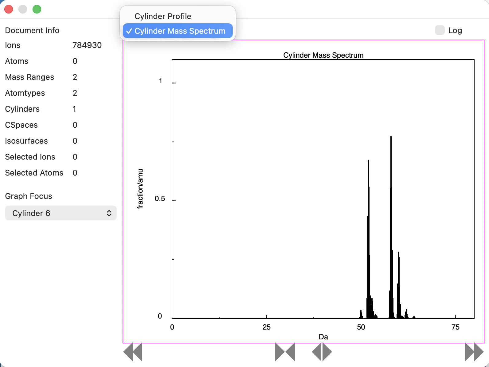
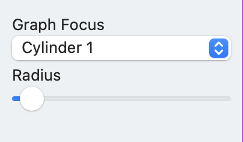
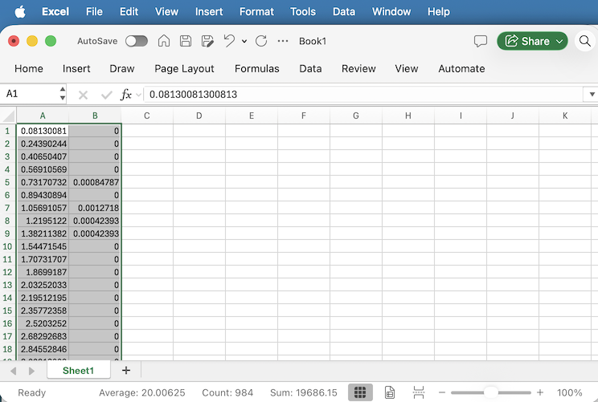

Sinterapt can work with a number of geometrical objects to specify a range of interest in a dataset, and the most simple of these is the cylinder.
Geometrically, a cylinder is defined by a point in space, a direction parallel to the cylinder, and a radius.
To define a cylinder in Sinterapt, click on the Cylinder button in the graphics window toolbar. Then, click and drag in the graphics window: The point of the click will define a point on the cylinder, the direction of the current view defines the direction of the cylinder, and the distance dragged before letting the mouse up defines the radius.
After the drag is complete, the cylinder should be highlighted in the graphics window, as shown here:

It may be hard to see, because the view is looking down the cylinder, parallel to its sides. To get a better view, tap the rotate button and rotate the view a little bit to get a better view, like this:

You'll notice some effects from making the cylinder:
To view a concentration profile along the axis of the cylinder, including only the atoms within the cylinder itself, click the "Graph Focus" popup button and choose the cylinder you just made. It should appear automatically:

It is also possible to view just a mass spectrum for ions within the bounds of the cylinder. To do this, select "Cylinder Mass Spectrum" from the popup above the graph:

After choosing the cylinder in the "Graph Focus" popup, a UI element for controlling the cylinder radius should also appear in the inspector window:

To put the data for any on the graphs on the system clipboard, option click on the graph to reveal a contextual menu. Choosing "Copy Data" puts the data on the clipboard, and which can then be pasted in another app, for example, Excel:

Cylinders can be manipulated with the scripting interface. To make a cylinder:
tell application "Sinterapt"
tell document 1
set thePosition to {0.0, 0.0, 50.0}
set theDirection to {1.0, 1.0, 0.0}
set theRadius to {20.0}
make new cylinder with properties {name:"Cyl Radius 20", position:thePosition, direction:theDirection, radius:theRadius}
end tell
end tellNote that using the scripting interface, more precise control is available over the geometry, and it is possible to supply a name as well, which will be used elsewhere in the UI, for example in the "Graph Focus" popup.